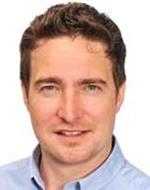

Computer Graphics & Visual Computing (CGVC) 2018
13th - 14th September 2018
Swansea University, United Kingdom


Keynote Talk
Timos Kipouros
Visual Analytics for the direct support of Value Assessment

Abstract
In modern industries the design and optimisation in complex multidisciplinary design spaces is crucial. It is a process involving the simultaneous consideration of conflicting multiple criteria stemming from different domains and stakeholders. Computational models and simulations are utilised extensively, and multidimensional visualisation, as will be shown, can play a key role exploiting our fantastic pattern recognition ability in discovering relational information in such datasets and sequentially guiding the complex engineering design decisions. This will happen by identifying the connections between different stakeholder expectations and engineering technical properties satisfying a number of physical, geometrical, and any type of constraints. Though the examples are from the aerospace industry, the methodology is widely applicable.
Short Biography
Timos is a Senior Research Associate in the Engineering Design Centre at the University of Cambridge and the lead researcher in the Change Management and Computational Design groups. Timos is also a Lecturer in Computational Engineering Design Optimisation in Cranfield University. His primary research focus is in the areas of multi-physics optimisation methods, change propagation in engineering design, value driven design, interactive computational design, and multidimensional engineering data visualisation and analysis.
Capstone Talk
Prof Richard Johnston
Visualisation in Microscopy – making sense of the invisible world in 3D

Abstract
Interdisciplinarity in science is crucial. The size, complexity, and global nature of the challenges researchers are facing down, calls for diverse teams with different backgrounds and skills. Graphics and visualization can be the common language between cultures and disciplines that both enables and accelerates modern research. Microscopy is also an enabling technology, facilitating huge developments across life and materials sciences. And as imaging techniques become more complex - achieving higher resolutions, producing greater volumes of data – collaboration with another enabling field, computing, is essential. Within our research group we use imaging, and in particular X-ray microscopy to reveal internal microstructures in 3D. Engaging visualization is key to understanding these hidden worlds, but also to collaboration and public engagement. There are a number of major challenges in the capture and processing of imaging data, such as reconstruction, identification, segmentation, and visualization, where advanced computation is critical. This has the potential to speed up science, but through visualization can also enhance communication and understanding between researchers, and wider communities. The stories of science are enhanced by visualization. When the data and cold hard facts don’t cut it, visual stories can amplify the power of the messaging, leading to greater impact on global issues like climate change and disease.Short Biography
Professor in materials science and engineering at Swansea University in the UK. Co- Director of the £10M Advanced Imaging of Materials (AIM) facility at Swansea, of the £13.7M Materials and Manufacturing Academy for postgraduate training, and the STFC Regional Beamline-Bridging Facility. Founder and Director of the Research as Art awards, which have reached over 50 million people worldwide since 2009, A Software Sustainability Institute Fellow, and a previous British Science Association Media Fellow at Nature.
Written for Nature, Scientific American, The Guardian, Huffington Post. Contributed to and appeared on TV and radio, including the BBC Horizon programme.